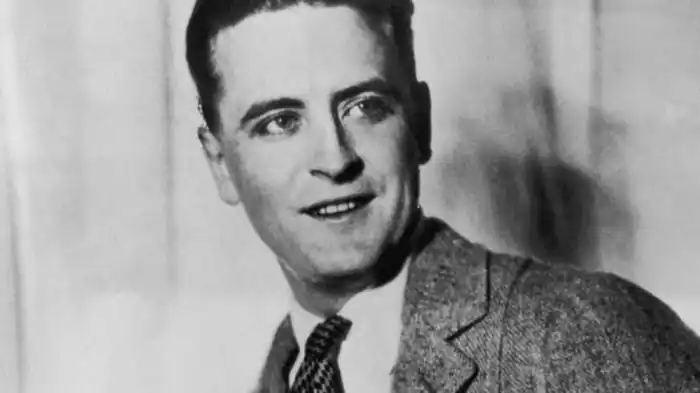
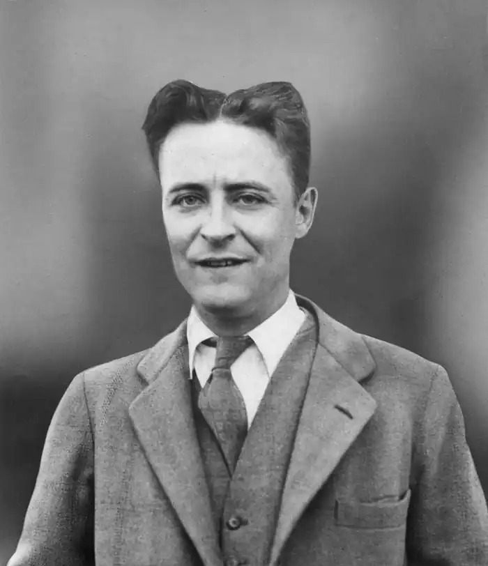
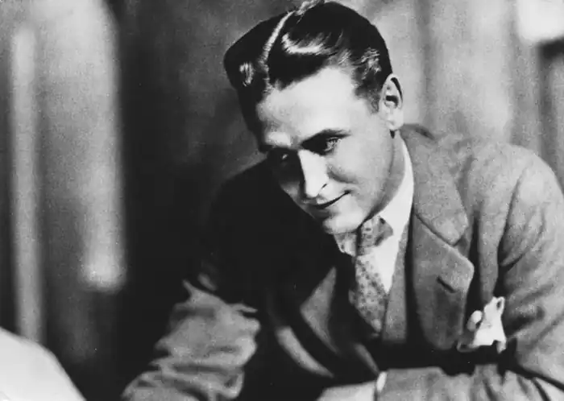

ФІЦДЖЕРАЛД, Френсіс Скотт (Fitzgerald, Francis Scott — 24.09.1896, Сент-Пол, Міннесота — 21.12. 1940, Голлівуд, Каліфорнія) — американський письменник.Усі біографи Фіцджералда зазначають, що він народився в сім'ї ірландських переселенців. Батько письменника, ірландець Френсіс Едвард, був вкрай невдатним дрібним підприємцем. І лише доволі чималі статки діда, який зумів розбагатіти, торгуючи бакалією, дозволили батькам письменника заплатити за навчання сина в одному з найпрестижніших університетів США — Прінстонському.
Під час навчання в університеті молодий Фіцджералд познайомився і потоваришував із поетом Дж. П. Бішопом, а також з Е. Вілсоном, котрий згодом став знаменитим критиком. З останнім Фіцджералд приятелював упродовж усього життя. Вже у Прінстоні Фіцджералд почав виявляти інтерес до літературної творчості: він писав тексти оперет для студентського театру, смішні та сентиментальні вірші, завзято працював над своїм першим романом "Поцейбіч раю" ("This Side of Paradise", 1920).
Роки Першої світової війни означили початок нового етапу в житті Фіцджералда. Він, як і багато його ровесників, добровольцем вступив у лави американської армії й опинився у форті Лівенворт (шт. Канзас) для проходження тримісячної військової підготовки перед відправленням до Європи. Фіцджералд вважав свою молодість, як, утім, і молодість усього свого покоління, безповоротно втраченою. "Якщо ми коли-небудь і повернемося, — пророкував Фіцджералд у листі до кузини Сесілії, — хоча це мене й не надто турбує, то ми постаріємо у найгіршому значенні цього слова. Урешті-решт, у житті небагато привабливого, крім молодості, а в старості, як я гадаю, — любові до молодості інших". Проте на фронт, на відміну від Е. Хемінґвея, Фіцджералд так і не потрапив. Невдовзі буде укладене перемир'я, війна припиниться, а Фіцджералд до кінця свого життя жалкуватиме, що йому не довелося взяти участь у бойових діях, набути неоціненного письменницького досвіду. Зараз можна лише здогадно міркувати з приводу того, якими б стали книги Фіцджералда, якби його доля склалася інакше. Після демобілізації у 1919 р. Фіцджералд приїхав у Нью-Йорк і став службовцем рекламного агентства. Компонування реклами не приносило йому ні матеріального статку, ні морального задоволення. До того ж, Зельда Сейр, наречена Фіцджералда, відмовлялася вийти за нього заміж, мотивуючи своє рішення матеріальною неспроможністю Фіцджералда. Відтак із цієї миті Фіцджералд усі свої зусилля віддав створенню першого роману "Поцейбіч раю". І його сподівання нарешті збулися. Книгу, яку Фіцджералду вдалося видати з неабиякими труднощами, із захватом зустріла читацька громада, та й критика поставилася до молодого письменника вельми прихильно. Привабливість роману полягає в тому, що Фіцджералд створив його передусім для власного покоління, яке на собі відчуло кризу гуманістичних цінностей і відмовилося надалі вірити у можливість суспільного прогресу, а в абстрактні гасла й поготів. У своєму романі Фіцджералд проголосив, що на сцену історії вийшло нове покоління, якому, щоправда, також судилося "вигукувати старі гасла, причащатися до старих символів віри". Це покоління "приречене рано чи пізно на поклик кохання і честолюбства зануритися в брудну сіру метушню; нове покоління ще більше, ніж старе, заражене страхом перед бідністю, ще більше схиляється перед успіхом, пересвідчившись у тому, що всі боги померли, всі війни відгриміли, всяка віра знецінилася". Період часу, відтворений у першому великому творі Фіцджералда, був порою становлення його "втрачених" однолітків. Ці молоді люди з великою цікавістю поставилися до пошуків правильного життєвого шляху, які провадив головний герой роману Еморі Блейн, адже подібними проблемами тоді переймалися і вони самі. Весілля із Зельдою Сейр усе ж таки відбулося, хоча через багато років Фіцджералд зізнається, що шлюб із Зельдою був найбільшою помилкою у його житті. Подружжя (в основному з ініціативи Зельди) вело дозвільний спосіб життя: вечері у фешенебельних ресторанах, нічні оргії з пиятикою тощо, їхні імена постійно з'являлися у скандальній хроніці бульварних видань. Дочку Франс Скотт молоді батьки залишили під опіку няньки. У ранніх творах Фіцджералда, створених на початку 20-х pp., — у романі "Вродливі та приречені" ("The Beautiful and Damned", 1922), збірках новел "Емансипантки і любомудри" ("Flappers and Philosophers", 1920), "Оповідки Джазового віку" ("Tales of the Jazz Age", 1922) — критичне сприйняття дійсності простежується ще не так виразно і виявляється здебільшого у невимушеному іронічному настрої розповіді. Особистість письменника легко ототожнюється з героями його творів. Все це в підсумку сприяло широкій популярності автора (сучасники безпосередньо співвідносили Фіцджералда з "віком джазу"), який зумів виразити головні вартості молодого покоління: юність, потяг до насолод і безтурботних розваг. "Він уособлював втілення американської мрії: молодості, вроди, заможності, раннього успіху, — зазначає біограф Фіцджералда, письменник Е. Тернбулл, — і вірив у ці атрибути так пристрасно, що аж наділяв їх певною величчю". По суті, жива людина перетворилася у легенду, у символ, і масова свідомість вимагала їхнього повного ототожнення. Відтак до кожного нового твору Фіцджералда застосовувалися саме такі критерії. Не останню роль у цьому відіграла й американська критика, що намагалася зіставити думки та вчинки письменника з думками та вчинками його героїв. Схильність до марнування життя, схиляння перед багатством, емоційна неврівноваженість — усе те, що було характерним для деяких персонажів Фіцджералда, критика намагалася припасувати до самого письменника. І тому, коли з'явилися найвидатніші твори Фіцджералда — такі, як "Великий Ґетсбі" ("The Great Gatsby", 1925) і "Ніч лагідна" ("Tender is the Night", 1934), які не вкладалися в усталені рамки, багато хто просто не спромігся відчути їхню справжню силу і належно оцінити. У романі "Великий Ґетсбі" Фіцджералд виносить на загальний розгляд феномен "американської мрії", який є одним із засадничих понять усієї американської історії. В образі головного героя Джея Ґетсбі письменникові вдалося одночасно домогтися дивовижної гармонії у змалюванні привабливості мрії та неминучого її краху. Спершу Фіцджералд мав намір назвати свій роман "Серед мільйонерів і сміттєзвалищ". У цій назві виражені головні мотиви твору — протиставлення величезних матеріальних багатств і духовного спустошення тих, хто ними володіє. Прототипом Ґетсбі, як згодом писав Фіцджералд, став знайомий фермер з Міннесоти, а точніше — пов'язана з ним романтична історія, яка запала письменникові у пам'ять. Через образ Ґетсбі Фіцджералд зумів втілити у конкретну поетичну форму своє ставлення до багатіїв як до людей іншої породи, котрі посіли у цьому житті найліпші місця. Але письменник також розумів і моральну розбещеність таких представників суспільства, не довіряв їхній могутності. "Цьому мене навчило все моє життя, — розмірковував Фіцджералд перед смертю, — бідна дитина у місті багатіїв, парія у школі для дітей еліти, бідний студент у клубі для заможних нащадків у Прінстоні. Я ніколи не міг пробачити їм те, що вони багаті, і це позначилося на всьому моєму житті та моїй творчості". У романі "Великий Ґетсбі" виразно виявилося двоїсте ставлення автора до героя. Образ Ґетсбі складається із сукупності різних точок зору, таким чином підкреслюється трагічність цього персонажа. Це трагедія неординарних людей, котрі вирішили присвятити себе єдиній справі — примноженню своїх капіталів. У цьому вони вбачали ключ до людського щастя. Ґетсбі спекулює на біржі, збиваючи неабиякі статки, лише заради того, щоби здобути право на кохану жінку. Але гроші — незважаючи на їхню позірну могутність — не здатні принести йому щастя. У душі Ґетсбі відбувається конфлікт двох несумісних прагнень, двох зовсім протилежних стихій. З одного боку, це мрійливість, наївність, простодушність, "романтичний запал", "рідкісний дар надії". А з іншого — практицизм і неперебірливість у засобах, плазування перед багатством і успіхом, марнотратність людських сил. "Американська мрія" трагічна, оскільки її проблеми є нездоланними. Саме цим пояснюється трагічний характер найголовніших творів Фіцджералда. Він розвінчує надзвичайно популярний соціально-етичний міф про процвітання всіх і кожного, про легкість "шляху нагору" в американському суспільстві. Роман "Великий Ґетсбі" свідчить і про своєрідність художнього методу письменника. Фіцджералд став першовідкривачем не тільки в царині соціальної візії, а й у світі поетики. Він одним із перших в американській літературі почав застосовувати у своїй творчості принципи ліричної прози, водночас надзвичайно потужно впливаючи на емоції читачів. У романі дуже тонко і складно переплітаються сатирична і лірична стихії, які в естетичному відношенні постають як єдина, нерозривна цілість. Подальша творча еволюція Фіцджералда тривала двома паралельними напрямками. Він писав і розважальні, "дешеві", за його власним означенням, оповідання, проте не полишав і серйозної прози. Так чи інакше, але всі його романи були продиктовані прагненням сказати правду, висловити свої справжні погляди. Наступний роман "Ніч лагідна" Фіцджералд назвав "своїм найулюбленішим твором". Саме в ньому він підсумував свої роздуми про долі молодого покоління 20-х pp. Фіцджералд реалістично описав історію Річарда Дайвера, показавши, що не лише зовнішні згубні впливи, а й власна слабкість прискорюють процес духовної деградації героя. Останні роки життя Фіцджералда були доволі плідними для письменника (він написав близько 50 оповідань, частину з яких опублікував у періодичних виданнях, а решта залишилися у рукописах і побачили світ вже після смерті автора). Утім, різноманітних втрат та розчарувань у цей період теж не бракувало. Надії, які Фіцджералд пов'язував із публікацією своїх нових творів, так і не здійснилися. Сучасники письменника не поділяли його трагічного сприйняття американської дійсності. Оточений муром нерозуміння, Фіцджералд, по суті, опинився у цілковитій ізоляції, внаслідок якої в середині 30-х pp. письменник пережив тяжку духовну кризу. Значною мірою кризу спричинив і важкий психічний розлад дружини, що з'ясувалося надто пізно, коли вже пізно було їй чимось допомогти. Відтак вона стала постійною пацієнткою психіатричної лікарні. Незадовго до смерті Фіцджералд розпочав роботу над своїм новим романом "Останній магнат" ("The Last Tycoon"), який, однак, закінчити не встиг. У романі відтворюються спостереження Фіцджералда, які письменник зробив у Голівуді, у цій "фабриці мрій", де він працював штатним сценаристом протягом кількох останніх років. Помер Фіцджералд 21 грудня 1940 р. від серцевого нападу 44-річним. Надзвичайно тонкий художник, який зумів розкрити складність і суперечливість людської психології, Фіцджералд у своїй творчості втілив чимало явищ, які визначили обличчя країни на багато десятиліть.Українською мовою твори Фіцджералда перекладав М. Пінчевський. К. Савельев